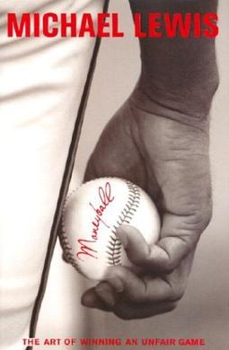
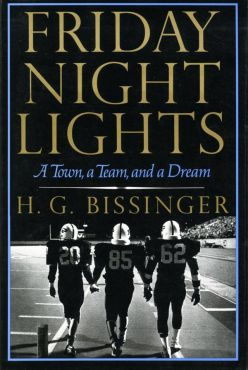
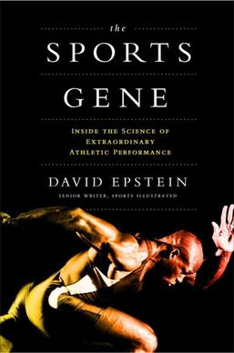

Sports

Moneyball: The Art of Winning Friday Night Lights: A Town,
The Game (Dryden book)
The Sports Gene
an Unfair Game
a Team, and a Dream
SPORTS occupies a vital role in our lives. ... Sports is one such activity which helps us in maintaining a proper
physique and a positive mentality. Apart from keeping a healthy body and mind,sports also helps us in alerting our
senses,keeps us aware and an undaunting personality and outlook on life.
Sports is very essential for every human life which keep them fit and fine and physical strength. It has great
importance in each stage of life. It also improves the personality of peoples. Sports keep our all organ alert
and heart becomes most stronger by regular playing some kind of sports. sports has always given priority from
old ages and nowadays it has become more fascinating. Due to the physical activity blood pressure also remains
healthy, and blood vessels remain clean. Sugar level also reduces and cholesterol comes down by daily activity.
Different people have different interest of sports but the action is the same in all sports. Sports are becoming
big channels to make more capital/money day by day and the number of people is also increasing.